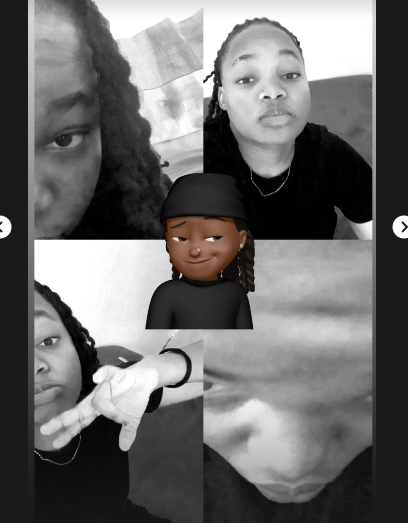

Hi! I'm a Beginner Web Developer
This is my first multi-page website, and I'm excited to share it with you!
How the Idea of This Website Came About
The idea for this website came from my passion for learning web development. I wanted to create something simple and personal to showcase my journey and learn how to make functional web pages. As a beginner, I wanted to try working with multiple pages, including a home page, an about page, and a contact page. This project was a great way to start experimenting with basic web design and GitHub Pages.